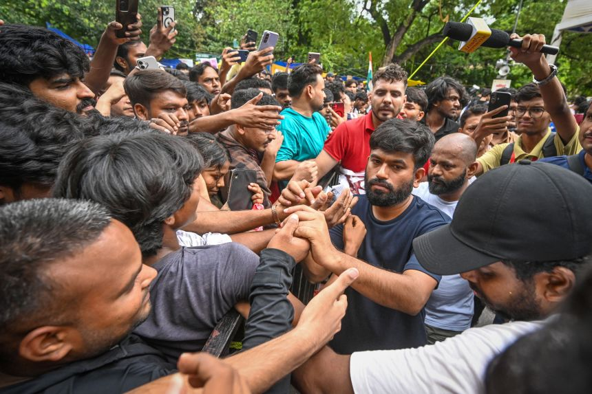
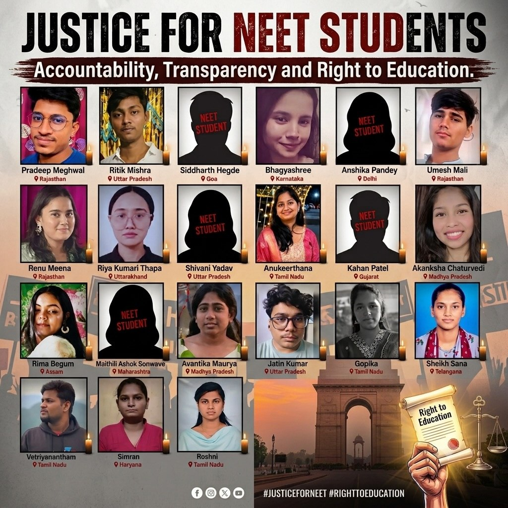
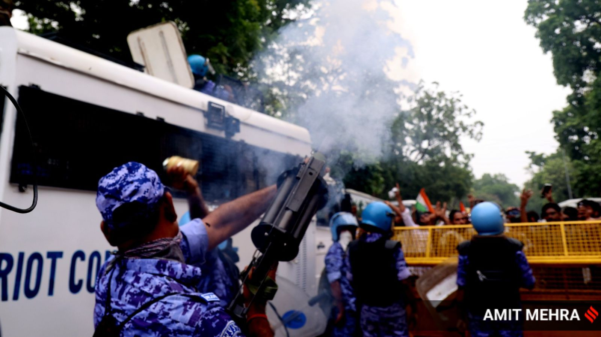
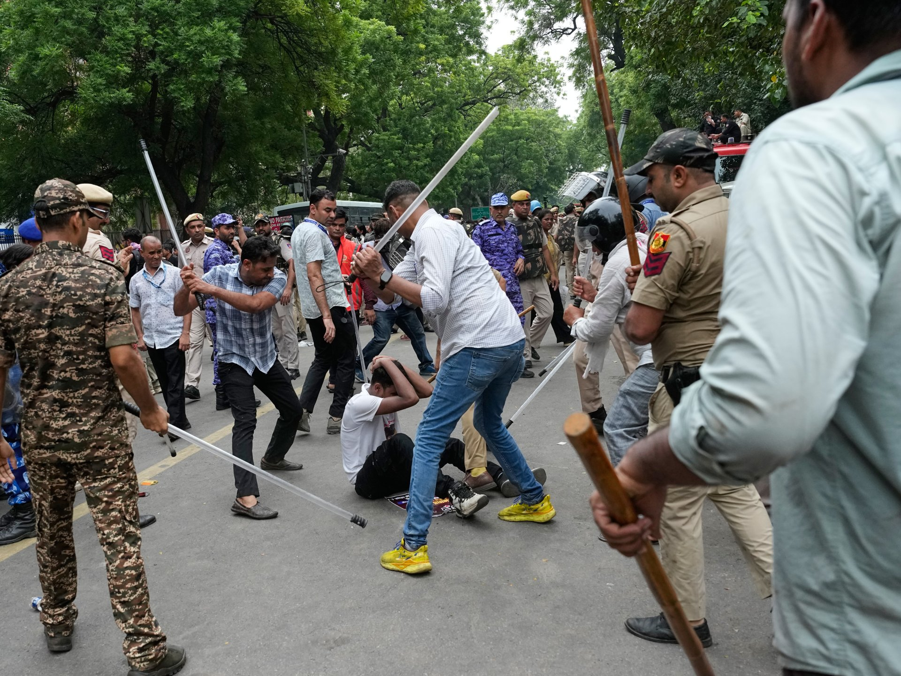
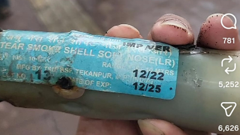

A documentation of the CJP-led student protests and the disputed police actions of 20–21 July 2026 — where official and organizer accounts diverge, and what remains unresolved. CJP के नेतृत्व वाले छात्र विरोध प्रदर्शनों और 20–21 जुलाई 2026 की विवादित पुलिस कार्रवाई का दस्तावेज़ीकरण — जहाँ आधिकारिक और आयोजकों के विवरण अलग-अलग हैं, और जो अभी भी अनसुलझा है।

The protests are led by the Cockroach Janta Party (CJP), a satirical student movement founded in May 2026 by activist Abhijeet Dipke. It began as an online campaign of satirical memes and grew into a mass protest movement after gaining a large social media following. इन विरोध प्रदर्शनों का नेतृत्व कॉकरोच जनता पार्टी (CJP) कर रही है, जो मई 2026 में कार्यकर्ता अभिजीत दीपके द्वारा स्थापित एक व्यंग्यात्मक छात्र आंदोलन है। यह व्यंग्यात्मक मीम्स के एक ऑनलाइन अभियान के रूप में शुरू हुआ और सोशल मीडिया पर बड़ी संख्या में फॉलोअर्स मिलने के बाद एक जनआंदोलन में बदल गया।
The name is a reclaimed insult — a reference to a remark by a Chief Justice of India's Supreme Court likening unemployed young people to "cockroaches." The movement adopted it as its mascot and identity. यह नाम एक अपमानजनक टिप्पणी को पुनः अपनाकर बनाया गया है — भारत के सुप्रीम कोर्ट के एक मुख्य न्यायाधीश की उस टिप्पणी के संदर्भ में, जिसमें बेरोज़गार युवाओं की तुलना "कॉकरोच" से की गई थी। आंदोलन ने इसे अपना प्रतीक और पहचान बना लिया।
This part has a well-documented factual trail, separate from the protest itself. NEET-UG (the National Eligibility cum Entrance Test, India's medical college entrance exam, run by the National Testing Agency) was held on 3 May 2026 for over 2.27 million candidates. Investigators found that a "guess paper" had circulated in the weeks before the test, and that around 120 of roughly 400 questions in it matched the real exam — including, reportedly, all 90 Biology and all 45 Chemistry questions. Because of this overlap, the exam was cancelled on 12 May 2026 and a re-test was ordered. इस हिस्से का एक अच्छी तरह से दस्तावेज़ीकृत तथ्यात्मक विवरण है, जो विरोध प्रदर्शन से अलग है। NEET-UG (नेशनल एलिजिबिलिटी कम एंट्रेंस टेस्ट, भारत की मेडिकल कॉलेज प्रवेश परीक्षा, जिसे नेशनल टेस्टिंग एजेंसी द्वारा संचालित किया जाता है) 3 मई 2026 को 2.27 करोड़ से अधिक उम्मीदवारों के लिए आयोजित की गई थी। जांचकर्ताओं ने पाया कि परीक्षा से हफ्तों पहले एक "गेस पेपर" प्रसारित हो रहा था, और उसमें लगभग 400 में से 120 प्रश्न असली परीक्षा से मेल खाते थे — जिसमें कथित तौर पर सभी 90 जीव विज्ञान और सभी 45 रसायन विज्ञान के प्रश्न शामिल थे। इस समानता के कारण, परीक्षा 12 मई 2026 को रद्द कर दी गई और पुनः परीक्षा का आदेश दिया गया।
A CBI investigation traced the leak's physical path: a hard copy of the question paper was allegedly handwritten out, scanned, and converted to PDF, then sold to students at coaching centres in Rajasthan's Sikar district for between ₹2–5 lakh (roughly $2,400–$6,000) in access fees. Investigators say the paper moved through intermediaries in Pune, Nashik, and Gurgaon before being circulated widely via WhatsApp groups, Telegram channels, and coaching-centre networks across Rajasthan, Haryana, and Maharashtra. Multiple people have been arrested in connection with this. CBI जांच ने लीक के भौतिक मार्ग का पता लगाया: कथित तौर पर प्रश्नपत्र की एक हार्ड कॉपी को हाथ से लिखा गया, स्कैन किया गया और PDF में बदला गया, फिर राजस्थान के सीकर जिले के कोचिंग सेंटरों में छात्रों को ₹2–5 लाख (लगभग $2,400–$6,000) की पहुँच शुल्क पर बेचा गया। जांचकर्ताओं का कहना है कि पेपर पुणे, नासिक और गुड़गांव में बिचौलियों से होते हुए राजस्थान, हरियाणा और महाराष्ट्र में व्हाट्सएप समूहों, टेलीग्राम चैनलों और कोचिंग सेंटर नेटवर्क के माध्यम से व्यापक रूप से प्रसारित हुआ। इस संबंध में कई लोगों को गिरफ्तार किया जा चुका है।
This is a separate, distinct incident from the 2024 NEET-UG leak (which involved a different gang operating out of Hazaribagh, Jharkhand) — both scandals are sometimes discussed together since they involve the same exam and agency. यह 2024 के NEET-UG लीक से एक अलग, भिन्न घटना है (जिसमें झारखंड के हज़ारीबाग़ से संचालित एक अलग गिरोह शामिल था) — दोनों घोटालों की चर्चा कभी-कभी एक साथ की जाती है क्योंकि इनमें एक ही परीक्षा और एजेंसी शामिल है।
No source found in this research alleges that Education Minister Dharmendra Pradhan personally leaked the paper, ordered the leak, or was part of the criminal network. The arrests and CBI findings point to coaching-centre operators, intermediaries, and a handwriting/scanning chain — not the ministry. इस शोध में मिले किसी भी स्रोत में यह आरोप नहीं लगाया गया कि शिक्षा मंत्री धर्मेंद्र प्रधान ने व्यक्तिगत रूप से पेपर लीक किया, लीक का आदेश दिया, या आपराधिक नेटवर्क का हिस्सा थे। गिरफ्तारियाँ और CBI के निष्कर्ष कोचिंग सेंटर संचालकों, बिचौलियों और हस्तलेखन/स्कैनिंग शृंखला की ओर इशारा करते हैं — मंत्रालय की ओर नहीं।
The demand for his resignation is a demand for political accountability, not an allegation that he committed the leak: protesters argue that as the minister overseeing the NTA (the agency that conducts the exam), repeated security failures — this is not the first NEET leak — happened on his watch, and that responsibility for systemic failure should fall on him regardless of who physically carried out the leak. That is an argument about political responsibility, and readers should treat it as such rather than as an allegation of personal wrongdoing. उनके इस्तीफे की मांग राजनीतिक जवाबदेही की मांग है, न कि यह आरोप कि उन्होंने लीक किया: प्रदर्शनकारियों का तर्क है कि NTA (परीक्षा संचालित करने वाली एजेंसी) की देखरेख करने वाले मंत्री के रूप में, बार-बार सुरक्षा विफलताएँ — यह पहला NEET लीक नहीं है — उनके कार्यकाल में हुईं, और व्यवस्थागत विफलता की जिम्मेदारी उन पर आनी चाहिए, चाहे लीक को शारीरिक रूप से किसी ने भी अंजाम दिया हो। यह राजनीतिक जिम्मेदारी के बारे में एक तर्क है, और पाठकों को इसे व्यक्तिगत गलत काम के आरोप के बजाय इसी रूप में देखना चाहिए।
Sourced reasons include: the cancellation and disruption of an exam over two million students had prepared for; anger that this is a recurring pattern (a similar leak scandal hit NEET-UG in 2024); allegations of similar irregularities in UGC-NET and CSIR-NET; and a broader claim that the exam system itself is unreliable and unaccountable when it fails. Beyond the exam issue specifically, reporting describes the CJP as channeling wider frustration among young, often unemployed people — the "cockroach" framing itself grew out of a remark about unemployed youth, not just exam-takers. स्रोतों में बताए गए कारणों में शामिल हैं: उस परीक्षा का रद्द होना और बाधित होना जिसके लिए बीस लाख से अधिक छात्रों ने तैयारी की थी; यह गुस्सा कि यह एक दोहराया जाने वाला पैटर्न है (2024 में NEET-UG में भी इसी तरह का लीक घोटाला हुआ था); UGC-NET और CSIR-NET में समान अनियमितताओं के आरोप; और यह व्यापक दावा कि परीक्षा प्रणाली खुद ही अविश्वसनीय है और विफल होने पर जवाबदेह नहीं है। परीक्षा के मुद्दे से परे, रिपोर्टिंग CJP को युवाओं, अक्सर बेरोज़गार लोगों, के बीच व्यापक असंतोष को माध्यम देने वाले आंदोलन के रूप में वर्णित करती है — "कॉकरोच" की यह परिभाषा खुद बेरोज़गार युवाओं के बारे में एक टिप्पणी से उपजी है, न कि केवल परीक्षार्थियों के बारे में।
Wangchuk, a 59-year-old engineer and activist, began fasting on 28 June 2026 at Jantar Mantar to demand Pradhan's resignation, joined by a few hundred students at his stage. By 18 July — 20 days in — doctors were reporting his health had deteriorated, including a drop in potassium levels described as life-threatening. वांगचुक, 59 वर्षीय इंजीनियर और कार्यकर्ता, ने प्रधान के इस्तीफे की मांग को लेकर 28 जून 2026 को जंतर मंतर पर उपवास शुरू किया, जिसमें उनके मंच पर कुछ सौ छात्र शामिल हुए। 18 जुलाई तक — 20 दिनों बाद — डॉक्टरों ने बताया कि उनकी सेहत बिगड़ गई थी, जिसमें पोटैशियम के स्तर में गिरावट भी शामिल थी जिसे जानलेवा बताया गया।
On the legality of his hospitalization, the reported facts point the opposite way from an "illegal removal": Delhi Police said he was moved to hospital on the orders of the Delhi High Court, based on expert medical advice, because of his declining health. A police statement said: "As per the orders of... high court and on expert medical advice due to deteriorating health condition of Sonam Wangchuk, he has been shifted to the hospital for essential medical care." The court is reported to have said the life of any citizen is precious. Police also said that as they complied with the order, protesters at the site "tried to create obstruction," causing what they called a "slight commotion." उनके अस्पताल ले जाए जाने की वैधता के बारे में, रिपोर्ट किए गए तथ्य "अवैध रूप से हटाए जाने" के विपरीत दिशा की ओर इशारा करते हैं: दिल्ली पुलिस ने कहा कि उन्हें उनकी बिगड़ती सेहत के कारण, विशेषज्ञ चिकित्सा सलाह के आधार पर, दिल्ली उच्च न्यायालय के आदेशों पर अस्पताल ले जाया गया। पुलिस के एक बयान में कहा गया: "उच्च न्यायालय के आदेशों के अनुसार... और सोनम वांगचुक की बिगड़ती स्वास्थ्य स्थिति के कारण विशेषज्ञ चिकित्सा सलाह पर, उन्हें आवश्यक चिकित्सा देखभाल के लिए अस्पताल स्थानांतरित किया गया है।" कहा जाता है कि अदालत ने कहा कि किसी भी नागरिक का जीवन अनमोल है। पुलिस ने यह भी कहा कि जब वे आदेश का पालन कर रहे थे, तो वहाँ मौजूद प्रदर्शनकारियों ने "बाधा उत्पन्न करने की कोशिश की," जिससे उन्होंने जिसे "हल्की अफरा-तफरी" कहा, वह हुई।
His wife, Gitanjali Angmo, raised separate concerns — she said he was moved without her or him being informed beforehand, and that the hospital was slow to share his medical reports with the family. Those are legitimate transparency concerns about how the move was carried out, but they are different from a claim that the hospitalization itself lacked legal authorization — the reporting indicates it was court-ordered, not a unilateral police action. उनकी पत्नी, गीतांजलि आंगमो, ने अलग चिंताएँ जताईं — उन्होंने कहा कि उन्हें या उनके पति को पहले से सूचित किए बिना स्थानांतरित किया गया, और अस्पताल परिवार के साथ चिकित्सा रिपोर्ट साझा करने में धीमा था। ये इस बारे में वैध पारदर्शिता संबंधी चिंताएँ हैं कि स्थानांतरण कैसे किया गया, लेकिन ये इस दावे से अलग हैं कि अस्पताल भेजे जाने में ही कानूनी अनुमति की कमी थी — रिपोर्टिंग बताती है कि यह अदालत के आदेश पर हुआ, न कि पुलिस की एकतरफा कार्रवाई।
This is a real and separately documented part of the story. News coverage tracked a rising count over time rather than one fixed number: 4 confirmed suicides among test-takers by late May 2026 (Al Jazeera); 11 reported in the 46 days between the 12 May cancellation and the 21 June re-test (Hindustan Times, via Hindus for Human Rights); and 13 reported by mid-to-late June (Outlook India), with further cases, including one in Ahmedabad, reported in the weeks after. A widely circulated memorial graphic titled "Justice for NEET Students" — reproduced below — names 20 individuals from across India, several matching names independently reported in news coverage (including Umesh Mali and Anshika Pandey, both named above). The 20-name tribute likely reflects a later, more complete tally than the earlier week-by-week news counts, though it comes from a community/advocacy source rather than a single newsroom, and some individuals are shown only as silhouettes, suggesting no photo was available or consented to. यह कहानी का एक वास्तविक और अलग से दस्तावेज़ीकृत हिस्सा है। समाचार कवरेज ने एक निश्चित संख्या के बजाय समय के साथ बढ़ती हुई गिनती को ट्रैक किया: मई 2026 के अंत तक परीक्षार्थियों में 4 पुष्ट आत्महत्याएँ (अल जज़ीरा); 12 मई रद्द होने और 21 जून पुनः परीक्षा के बीच 46 दिनों में 11 रिपोर्ट की गईं (हिंदुस्तान टाइम्स, हिंदूज़ फॉर ह्यूमन राइट्स के माध्यम से); और जून के मध्य से अंत तक 13 रिपोर्ट की गईं (आउटलुक इंडिया), जिसमें अहमदाबाद का एक मामला भी शामिल है जो बाद के हफ्तों में सामने आया। "जस्टिस फॉर NEET स्टूडेंट्स" शीर्षक से व्यापक रूप से प्रसारित एक स्मारक ग्राफिक — जो नीचे पुनः प्रस्तुत है — पूरे भारत से 20 व्यक्तियों के नाम बताती है, जिनमें से कई नाम समाचार कवरेज में स्वतंत्र रूप से रिपोर्ट किए गए नामों से मेल खाते हैं (जिसमें उमेश माली और अंशिका पांडे शामिल हैं, दोनों ऊपर उल्लेखित)। 20 नामों की यह श्रद्धांजलि संभवतः पहले की साप्ताहिक समाचार गणनाओं की तुलना में एक बाद की, अधिक पूर्ण गणना को दर्शाती है, हालाँकि यह एक समाचार कक्ष के बजाय एक सामुदायिक/एडवोकेसी स्रोत से आती है, और कुछ व्यक्तियों को केवल सिल्हूट के रूप में दिखाया गया है, जो बताता है कि कोई तस्वीर उपलब्ध नहीं थी या सहमति नहीं दी गई थी।
Cases documented by name in press coverage include a 22-year-old in Sikar, Rajasthan, who left a note reading (translated) "I am going away from this world, sorry"; a 20-year-old in Delhi who had missed a seat by four marks in 2025 and was reported to have become depressed after the cancellation; and a 23-year-old in Sikar whose family had reportedly sold land and taken on debt to fund years of coaching. Investigators in at least one case attributed the death to acute stress triggered by the exam's cancellation. प्रेस कवरेज में नाम से दस्तावेज़ीकृत मामलों में राजस्थान के सीकर की एक 22 वर्षीय शामिल हैं, जिन्होंने एक नोट छोड़ा (अनुवादित) "मैं इस दुनिया से जा रही हूँ, माफ़ करना"; दिल्ली का एक 20 वर्षीय जो 2025 में चार अंकों से सीट चूक गया था और बताया गया कि रद्द होने के बाद वह अवसादग्रस्त हो गया था; और सीकर का एक 23 वर्षीय जिसके परिवार ने कथित तौर पर वर्षों की कोचिंग के लिए जमीन बेची और कर्ज लिया था। कम से कम एक मामले में जांचकर्ताओं ने मौत का कारण परीक्षा रद्द होने से उत्पन्न तीव्र तनाव बताया।
This human cost is part of why the protests carry the weight they do — the paper leak is not treated by protesters as an abstract administrative failure, but as something with a documented toll on the students affected. यह मानवीय क्षति इस बात का हिस्सा है कि विरोध प्रदर्शन इतना महत्व क्यों रखते हैं — पेपर लीक को प्रदर्शनकारियों द्वारा एक अमूर्त प्रशासनिक विफलता के रूप में नहीं देखा जाता, बल्कि प्रभावित छात्रों पर एक दस्तावेज़ीकृत क्षति के रूप में देखा जाता है।

If you or someone you know is struggling: in India, the Kiran mental health helpline is 1800-599-0019, available 24/7 in multiple languages. यदि आप या आपका कोई परिचित मानसिक रूप से जूझ रहा है: भारत में, किरण मानसिक स्वास्थ्य हेल्पलाइन 1800-599-0019 है, जो कई भाषाओं में 24/7 उपलब्ध है।
This was reported as the largest protest in India's capital in recent years, deliberately timed to coincide with the opening of the Parliament session. इसे हाल के वर्षों में भारत की राजधानी में सबसे बड़ा विरोध प्रदर्शन बताया गया, जिसे जानबूझकर संसद सत्र की शुरुआत के साथ मेल खाने के लिए समयबद्ध किया गया था।


5 FIRs (First Information Reports) were registered over alleged violence, stone-pelting, and vandalism. Police said they were examining over 250 videos to identify individuals involved in the clashes. कथित हिंसा, पथराव और तोड़फोड़ को लेकर 5 FIR (प्राथमिकी) दर्ज की गईं। पुलिस ने कहा कि वे झड़पों में शामिल व्यक्तियों की पहचान के लिए 250 से अधिक वीडियो की जांच कर रहे हैं।
CJP founder Abhijeet Dipke put the wounded figure at 150 protesters — well above the police's count — and organizers alleged that hundreds were detained, far above the police's stated 70. CJP संस्थापक अभिजीत दीपके ने घायलों की संख्या 150 प्रदर्शनकारी बताई — जो पुलिस की गिनती से काफी अधिक है — और आयोजकों ने आरोप लगाया कि सैकड़ों लोगों को हिरासत में लिया गया, जो पुलिस द्वारा बताई गई 70 की संख्या से कहीं अधिक है।
Analysts note that regardless of whether the protests force any policy change, the crackdown feeds an existing opposition narrative about weakened democratic accountability — while the movement itself faces a steep climb toward concrete concessions. विश्लेषकों का कहना है कि चाहे विरोध प्रदर्शन किसी नीतिगत बदलाव को मजबूर करें या न करें, यह दमन कमज़ोर लोकतांत्रिक जवाबदेही के बारे में विपक्ष की मौजूदा कहानी को बल देता है — जबकि आंदोलन को स्वयं ठोस रियायतों की ओर एक कठिन चढ़ाई का सामना करना पड़ रहा है। Analysis reported via Al Jazeera, 21 July 2026अल जज़ीरा के माध्यम से रिपोर्ट किया गया विश्लेषण, 21 जुलाई 2026
This is worth answering carefully: reporting documents what officials have done, not their internal reasoning, and this page will not guess at motive. What's actually on record as of 22 July: the Education Minister has not resigned; the government sent the Health Minister to visit injured protesters and meet a CJP delegation, which reads as an attempt at outreach without a concession on the resignation demand itself; and Delhi Police maintained throughout that its restrictions and crowd-control measures were lawful. No official has publicly explained, on the record, a specific reason for declining the resignation demand. Any claim about why the government "doesn't want to" act would be speculation dressed as fact, so it's left as an open question rather than answered with invented reasoning. इसका उत्तर सावधानी से देना उचित है: रिपोर्टिंग अधिकारियों ने क्या किया, इसका दस्तावेज़ीकरण करती है, उनके आंतरिक तर्क का नहीं, और यह पेज मंशा का अनुमान नहीं लगाएगा। 22 जुलाई तक वास्तव में जो रिकॉर्ड पर है: शिक्षा मंत्री ने इस्तीफा नहीं दिया है; सरकार ने स्वास्थ्य मंत्री को घायल प्रदर्शनकारियों से मिलने और CJP प्रतिनिधिमंडल से मुलाकात के लिए भेजा, जिसे इस्तीफे की मांग पर कोई रियायत दिए बिना पहुँच बनाने के प्रयास के रूप में देखा जा सकता है; और दिल्ली पुलिस ने लगातार यह कहा कि उसके प्रतिबंध और भीड़ नियंत्रण उपाय कानूनी थे। किसी भी अधिकारी ने सार्वजनिक रूप से, रिकॉर्ड पर, इस्तीफे की मांग को अस्वीकार करने का कोई विशेष कारण नहीं बताया है। सरकार "क्यों नहीं चाहती" कि वह कार्रवाई करे, इस बारे में कोई भी दावा तथ्य के रूप में प्रस्तुत अटकल होगी, इसलिए इसे गढ़े हुए तर्क के साथ उत्तर देने के बजाय एक खुले प्रश्न के रूप में छोड़ा गया है।
This is the most contested part of the story. The claims from each side directly conflict, and neither has been independently verified in full. यह कहानी का सबसे विवादित हिस्सा है। दोनों पक्षों के दावे सीधे टकराते हैं, और किसी भी पक्ष की पूरी तरह स्वतंत्र रूप से पुष्टि नहीं हुई है।
Independent fact-checkers flagged that several viral videos shared as footage from 20 July were actually recycled from unrelated, earlier protests, and cautioned the public to rely on verified reporting rather than isolated social media posts. स्वतंत्र फैक्ट-चेकरों ने बताया कि 20 जुलाई की फुटेज के रूप में साझा किए गए कई वायरल वीडियो वास्तव में असंबंधित, पहले के विरोध प्रदर्शनों से पुनः इस्तेमाल किए गए थे, और जनता को अलग-थलग सोशल मीडिया पोस्ट के बजाय सत्यापित रिपोर्टिंग पर भरोसा करने की चेतावनी दी।
This allegation is real and did circulate — but it originates from social media, not a police admission or independent lab finding. Videos shared after the 20 July crackdown showed protesters, including CJP leader Ashutosh Ranka, holding up the remains of an exploded tear gas shell with markings reportedly showing a manufacture date of December 2022 and an expiry date of December 2025. The claim spread widely online, with users accusing Delhi Police of using "expired goods." As of this writing, this is an unverified social-media allegation, not a fact confirmed by Delhi Police, an independent lab, or a government inquiry. यह आरोप वास्तविक है और वाकई प्रसारित हुआ — लेकिन यह सोशल मीडिया से उत्पन्न हुआ है, न कि पुलिस की स्वीकृति या स्वतंत्र प्रयोगशाला के निष्कर्ष से। 20 जुलाई की कार्रवाई के बाद साझा किए गए वीडियो में प्रदर्शनकारियों, जिसमें CJP नेता आशुतोष रांका भी शामिल हैं, को एक फटे हुए आंसू गैस के गोले के अवशेष दिखाते हुए देखा गया, जिस पर कथित तौर पर दिसंबर 2022 की निर्माण तिथि और दिसंबर 2025 की समाप्ति तिथि अंकित थी। यह दावा ऑनलाइन व्यापक रूप से फैला, जिसमें उपयोगकर्ताओं ने दिल्ली पुलिस पर "एक्सपायर्ड सामान" इस्तेमाल करने का आरोप लगाया। इस लेखन के समय तक, यह एक असत्यापित सोशल-मीडिया आरोप है, न कि दिल्ली पुलिस, किसी स्वतंत्र प्रयोगशाला, या सरकारी जांच द्वारा पुष्ट तथ्य।
On the specific claim that expired tear gas is "poisoned" and causes permanent eye damage: no source found supports this. If anything, available reporting points the other way — in a separate, earlier case in Haryana involving a similar allegation against police, a retired Director General of Police stated on record that expired tear gas shells do not have adverse effects on human health; they simply become less effective and sometimes fail to detonate at all. No report was found linking the 20 July shells to any documented permanent eye injury. This claim should be treated as unconfirmed rather than repeated as fact. इस विशेष दावे के बारे में कि एक्सपायर्ड आंसू गैस "ज़हरीली" होती है और स्थायी आँख की क्षति का कारण बनती है: इसका समर्थन करने वाला कोई स्रोत नहीं मिला। यदि कुछ भी है, तो उपलब्ध रिपोर्टिंग विपरीत दिशा की ओर इशारा करती है — हरियाणा में पुलिस के खिलाफ इसी तरह के आरोप से जुड़े एक अलग, पहले के मामले में, एक सेवानिवृत्त पुलिस महानिदेशक ने रिकॉर्ड पर कहा कि एक्सपायर्ड आंसू गैस के गोलों का मानव स्वास्थ्य पर कोई प्रतिकूल प्रभाव नहीं होता; वे बस कम प्रभावी हो जाते हैं और कभी-कभी बिल्कुल भी नहीं फटते। 20 जुलाई के गोलों को किसी भी दस्तावेज़ीकृत स्थायी आँख की चोट से जोड़ने वाली कोई रिपोर्ट नहीं मिली। इस दावे को तथ्य के रूप में दोहराने के बजाय अपुष्ट माना जाना चाहिए।

Section 163 of the BNSS — the successor to the old CrPC Section 144 — allows police or a magistrate to prohibit assembly in an area to prevent apprehended danger to public order. BNSS की धारा 163 — पुरानी CrPC धारा 144 की उत्तराधिकारी — पुलिस या मजिस्ट्रेट को सार्वजनिक व्यवस्था के लिए आशंकित खतरे को रोकने के लिए किसी क्षेत्र में सभा को प्रतिबंधित करने की अनुमति देती है।
This provision has a well-documented history of being invoked against protest movements across the political spectrum in Delhi, including past actions against AAP workers, the wrestlers' protest at Jantar Mantar, and TMC protests outside the Election Commission — and it has previously faced court scrutiny over whether specific invocations were justified. इस प्रावधान का दिल्ली में राजनीतिक स्पेक्ट्रम में विरोध प्रदर्शनों के खिलाफ लागू किए जाने का एक अच्छी तरह से दस्तावेज़ीकृत इतिहास है, जिसमें AAP कार्यकर्ताओं, जंतर मंतर पर पहलवानों के विरोध प्रदर्शन, और चुनाव आयोग के बाहर TMC विरोध प्रदर्शनों के खिलाफ पिछली कार्रवाइयाँ शामिल हैं — और इसे पहले भी अदालत की जांच का सामना करना पड़ा है कि क्या विशेष रूप से लागू करना उचित था।
Whether its use on 20 July 2026 was a proportionate, lawful measure or an overreach used to suppress dissent is precisely the point of dispute between organizers and the government. No court ruling on this specific instance had been reported as of 22 July 2026. क्या 20 जुलाई 2026 को इसका इस्तेमाल एक आनुपातिक, कानूनी उपाय था या असंतोष को दबाने के लिए इस्तेमाल की गई एक ज़्यादती, यही आयोजकों और सरकार के बीच विवाद का सटीक बिंदु है। 22 जुलाई 2026 तक इस विशेष मामले पर किसी अदालती फैसले की सूचना नहीं मिली थी।